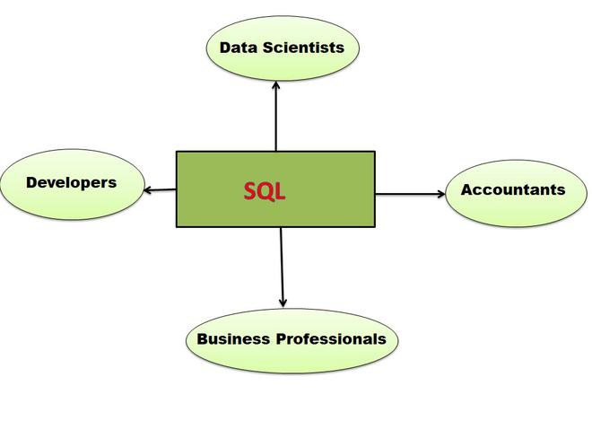
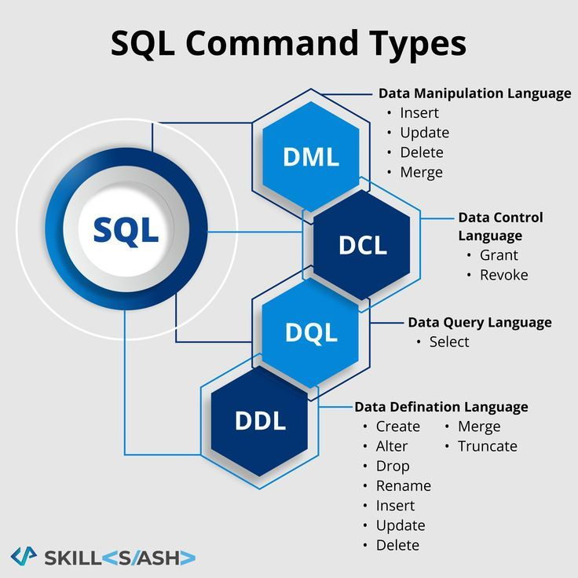
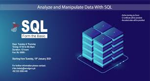
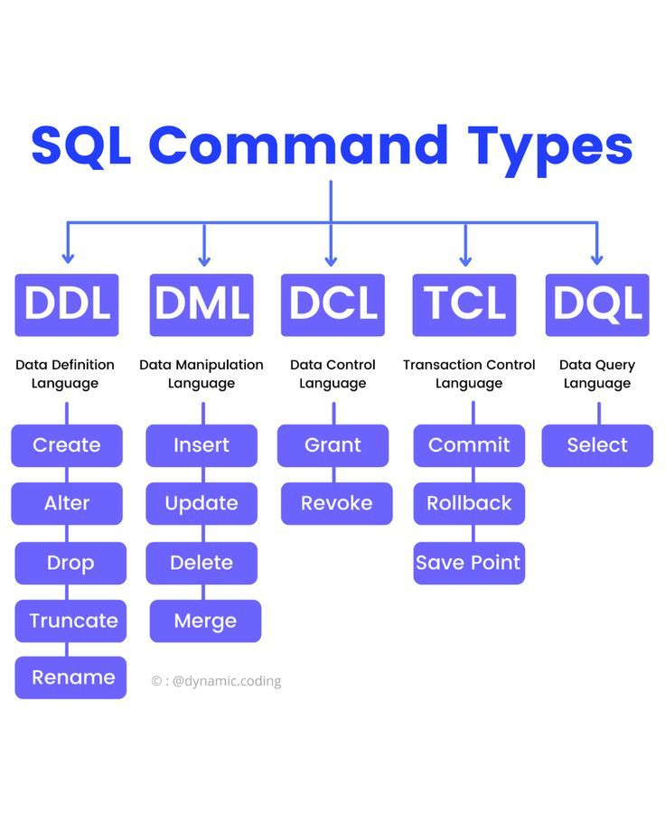

<div class="slideshow-container">

<div class="mySlides fade">
  <div class="numbertext">1 / 3</div>
  
  <div class="text">one</div>
</div>

<div class="mySlides fade">
  <div class="numbertext">2 /  3</div>
  
  <div class="text"> Two</div>
</div>

<div class="mySlides fade">
  <div class="numbertext">3 / 3</div>
  
  <div class="text"> Three</div>
</div>


</div>
<br>

<div style="text-align:center">
  <span class="dot"></span> 
  <span class="dot"></span> 
  <span class="dot"></span>
   
</div>

<script>
let slideIndex = 0;
showSlides();

function showSlides() {
  let i;
  let slides = document.getElementsByClassName("mySlides");
  let dots = document.getElementsByClassName("dot");
  for (i = 0; i < slides.length; i++) {
    slides[i].style.display = "none";  
  }
  slideIndex++;
  if (slideIndex > slides.length) {slideIndex = 1}    
  for (i = 0; i < dots.length; i++) {
    dots[i].className = dots[i].className.replace(" active", "");
  }
  slides[slideIndex-1].style.display = "block";  
  dots[slideIndex-1].className += " active";
  setTimeout(showSlides, 2000); // Change image every 2 seconds
}
</script>

</body>
</html> 


<!DOCTYPE html>
<!-- saved from url=(0033)https://learndbms.netlify.app/sql -->
<html lang="en"><head><meta http-equiv="Content-Type" content="text/html; charset=UTF-8">
    
    <meta name="viewport" content="width=device-width, initial-scale=1.0">
    <title>Document</title>
</head>
<body>
     
      &gt;
    <p>
        </p><h1>What is SQL?</h1>
SQL stands for Structured Query Language and is a computer language that we use to interact with a relational database. SQL is a tool for organizing, managing, and retrieving archived data from a computer database. The original name was given by IBM as Structured English Query Language, abbreviated by the acronym SEQUEL. When data needs to be retrieved from a database, SQL is used to make the request. The DBMS processes the SQL query retrieves the requested data and returns it to us. Rather, SQL statements describe how a collection of data should be organized or what data should be extracted or added to the database.
<h1>What are the characteristics of SQL?</h1>
SQL may be utilized by quite a number of users, which include people with very little programming experience.
SQL is a non-procedural language. 
We can without difficulty create and replace databases in SQL. It isn’t a time-consuming process. 
SQL is primarily based totally on ANSI standards. 
SQL does now no longer have a continuation individual.
SQL is entered into the SQL buffer on one or more lines. 
SQL makes use of a termination individual to execute instructions immediately. It makes use of features to carry out a few formatting.
It uses functions to perform some formatting. 
<h1>Uses of SQL</h1>
Data definition: It is used to define the structure and organization of the stored data and the relationships among the stored data items.
Data retrieval: SQL can also be used for data retrieval.
Data manipulation: If the user wants to add new data, remove data, or modifying in existing data then SQL provides this facility also.
Access control: SQL can be used to restrict a user’s ability to retrieve, add, and modify data, protecting stored data against unauthorized access.
Data sharing: SQL is used to coordinate data sharing by concurrent users, ensuring that changes made by one user do not inadvertently wipe out changes made at nearly the same time by another user.
SQL also differs from other computer languages because it describes what the user wants the computer to do rather than how the computer should do it. (In more technical terms, SQL is a declarative or descriptive language rather than a procedural one.) SQL contains no IF statement for testing conditions, and no GOTO, DO, or FOR statements for program flow control. Rather, SQL statements describe how a collection of data is to be organized, or what data is to be retrieved or added to the database. The sequence of steps to do those tasks is left for the DBMS to determine.

<h1>SQL Rules</h1>
A ‘;’ is used to end SQL statements.
Statements may be split across lines, but keywords may not.
Identifiers, operator names, and literals are separated by one or more spaces or other delimiters.
A comma (,) separates parameters without a clause.
A space separates a clause.
Reserved words cannot be used as identifiers unless enclosed with double quotes.
Identifiers can contain up to 30 characters.
Identifiers must start with an alphabetic character.
Characters and date literals must be enclosed within single quotes.
Numeric literals can be represented by simple values.
Comments may be enclosed between /* and */ symbols and maybe multi-line.
<h1>Why SQL?</h1>
SQL is an interactive question language. Users type SQL instructions into an interactive SQL software to retrieve facts and show them on the screen, presenting a convenient, easy-to-use device for ad hoc database queries. 
SQL is a database programming language. Programmers embed SQL instructions into their utility packages to access the facts in a database. Both user-written packages and database software packages (consisting of document writers and facts access tools) use this approach for database access. 
SQL is a client/server language. Personal computer programs use SQL to communicate over a network with database servers that save shared facts. This client/server architecture is utilized by many famous enterprise-class applications.
 SQL is Internet facts access language. Internet net servers that interact with company facts and Internet utility servers all use SQL as a widespread language for getting access to company databases, frequently through embedding SQL databases get entry to inside famous scripting languages like PHP or Perl.
 SQL is a distributed database language. Distributed database control structures use SQL to assist distribute facts throughout many linked pc structures. The DBMS software program on every gadget makes use of SQL to speak with the opposite structures, sending requests for facts to get entry to. 
SQL is a database gateway language. In a pc community with a mixture of various DBMS products, SQL is frequently utilized in a gateway that lets one logo of DBMS speak with every other logo. SQL has for this reason emerged as a useful, effective device for linking people, pc packages, and pc structures to the facts saved in a relational database. 
<h1>Data Type</h1>
The data type, as described below, must be a system data type or a user-defined data type. Many of the data types have a size such as CHAR(35) or Numeric(8,2).<br>

Bit –Integer data with either a 1 or 0 value<br>

Int –Integer (whole number) data from -2^31 (-2,147,483,648) through 2^31 – 1  (2,147,483,647)<br>

Smallint –Integer data from 2^15 (-32,768) through 2^15 – 1 (32,767)<br>

Tinyint –Integer data from 0 through 255<br>

Decimal –Fixed precision and scale numeric data from -10^38 -1 through 10^38<br>

Numeric –A synonym for decimal<br>

Timestamp –A database-wide unique number<br>

Uniqueidentifier –A globally unique identifier (GUID)<br>

Money – Monetary data values from -2^63 (-922,337,203,685,477.5808) through 2^63 – 1 (+922,337,203,685,477.<br>5807), with accuracy to one-ten-thousandth of a monetary unit

Smallmoney –Monetary data values from -214,748.3648 through +214,748.3647, with accuracy to one-ten-thousandth of a monetary unit<br>

Float –Floating precision number data from -1.79E + 308 through 1.79E + 308<br>

Real –Floating precision number data from -3.40E + 38 through 3.40E + 38<br>

Datetime –Date and time data from January 1, 1753, to December 31, 9999, with an accuracy of one-three-hundredths of a second, or 3.33 milliseconds<br>

Smalldatetime –Date and time data from January 1, 1900, through June 6, 2079, with an accuracy of one minute<br>

Char –Fixed-length non-Unicode character data with a maximum length of 8,000 characters<br>

Varchar –Variable-length non-Unicode data with a maximum of 8,000 characters<br>

Text –Variable-length non-Unicode data with a maximum length of 2^31 – 1 (2,147,483,647) characters<br>

Binary –Fixed-length binary data with a maximum length of 8,000 bytes<br>

Varbinary –Variable-length binary data with a maximum length of 8,000 bytes<br>

Image – Variable-length binary data with a maximum length of 2^31 – 1 (2,147,483,647) bytes<br>
<h1>What are SQL commands?</h1>
Developers use structured query language (SQL) commands, which are specific keywords or SQL statements, to work with data stored in relational databases. The following are categories for SQL commands.
<h1>1. Data Definition Language (DDL)</h1>
DDL changes the structure of the table like creating a table, deleting a table, altering a table, etc.<br>
All the command of DDL are auto-committed that means it permanently save all the changes in the database.<br>
Here are some commands that come under DDL:<br>

CREATE<br>
ALTER<br>
DROP<br>
TRUNCATE<br>
a. CREATE It is used to create a new table in the database.

Syntax:


CREATE TABLE TABLE_NAME (COLUMN_NAME DATATYPES[,....]);<br>
Example:<br>

CREATE TABLE EMPLOYEE(Name VARCHAR2(20), Email VARCHAR2(100), DOB DATE);  <br>
b. DROP: It is used to delete both the structure and record stored in the table.<br>

Syntax<br>

DROP TABLE table_name;  <br>
Example<br>

DROP TABLE EMPLOYEE;  <br>
c. ALTER: It is used to alter the structure of the database. This change could be either to modify the <br>characteristics of an existing attribute or probably to add a new attribute.<br>

Syntax:<br>

To add a new column in the table<br>

ALTER TABLE table_name ADD column_name COLUMN-definition;  <br>  
To modify existing column in the table:<br>

ALTER TABLE table_name MODIFY(column_definitions....);  <br>
EXAMPLE
<br>
ALTER TABLE STU_DETAILS ADD(ADDRESS VARCHAR2(20));  <br>
ALTER TABLE STU_DETAILS MODIFY (NAME VARCHAR2(20));  <br>
d. TRUNCATE: It is used to delete all the rows from the table and free the space containing the table.<br>

Syntax:
<br>
TRUNCATE TABLE table_name;  <br>
Example:<br>

TRUNCATE TABLE EMPLOYEE;  <br>
<h1>2. Data Manipulation Language<br></h1>
DML commands are used to modify the database. It is responsible for all form of changes in the database.<br>
The command of DML is not auto-committed that means it can't permanently save all the changes in the database. <br>They can be rollback.<br>
Here are some commands that come under DML:<br>

INSERT<br>
UPDATE<br>
DELETE<br>
a. INSERT: The INSERT statement is a SQL query. It is used to insert data into the row of a table.<br>

Syntax:<br>

INSERT INTO TABLE_NAME    <br>
(col1, col2, col3,.... col N)  <br>
VALUES (value1, value2, value3, .... valueN);  <br>
Or

INSERT INTO TABLE_NAME    <br>
VALUES (value1, value2, value3, .... valueN);  <br>  
For example:<br>

INSERT INTO javatpoint (Author, Subject) VALUES ("Sonoo", "DBMS"); <br> 
b. UPDATE: This command is used to update or modify the value of a column in the table.<br>

Syntax:<br>

UPDATE table_name SET [column_name1= value1,...column_nameN = valueN] [WHERE CONDITION] <br>  
For example:<br>

UPDATE students    <br>
SET User_Name = 'Sonoo'    <br>
WHERE Student_Id = '3'  <br>
c. DELETE: It is used to remove one or more row from a table.<br>

Syntax:<br>

DELETE FROM table_name [WHERE condition]; <br> 
For example:<br>

DELETE FROM javatpoint  <br>
WHERE Author="Sonoo";  <br>
<h1>3. Data Control Language<br></h1>
DCL commands are used to grant and take back authority from any database user.<br>
<br>
Here are some commands that come under DCL:<br>

Grant<br><br>
Revoke<br>
a. Grant: It is used to give user access privileges to a database.<br>
<br>
Example<br>

GRANT SELECT, UPDATE ON MY_TABLE TO SOME_USER, ANOTHER_USER;  <br>
b. Revoke: It is used to take back permissions from the user.<br>

Example<br>

REVOKE SELECT, UPDATE ON MY_TABLE FROM USER1, USER2;<br>  
<h1>4. Transaction Control Language</h1><br>
TCL commands can only use with DML commands like INSERT, DELETE and UPDATE only.<br>

These operations are automatically committed in the database that's why they cannot be used while creating <br>tables or dropping them.

Here are some commands that come under TCL:<br>

COMMIT<br>
ROLLBACK<br>
SAVEPOINT<br>
a. Commit: Commit command is used to save all the transactions to the database.<br>

Syntax:<br>

COMMIT;  <br>
Example:<br>

DELETE FROM CUSTOMERS  <br>
WHERE AGE = 25;  <br>
COMMIT;  <br>
b. Rollback: Rollback command is used to undo transactions that have not already been saved to the database.<br>

Syntax:
<br>
ROLLBACK;  <br>
Example:<br>

DELETE FROM CUSTOMERS  <br>
WHERE AGE = 25;  <br>
ROLLBACK;  <br>
c. SAVEPOINT: It is used to roll the transaction back to a certain point without rolling back the entire <br>transaction.<br>

Syntax:<br>

SAVEPOINT SAVEPOINT_NAME; <br> 
<h1>5. Data Query Language</h1>
DQL is used to fetch the data from the database.<br>

It uses only one command:<br>

<h1>SELECT</h1>
a. SELECT: This is the same as the projection operation of relational algebra. It is used to select the attribute based on the condition described by WHERE clause.

<h4>Syntax:</h4>

SELECT expressions<br>
FROM TABLES<br>
WHERE conditions; <br> 
For example:<br>

SELECT emp_name <br> 
FROM employee  <br>
WHERE age &gt; 20;  <br><hr>
<h1>Creating tables</h1>
    CREATE TABLE table_name (<br>
        column1 datatype,<br>
        column2 datatype,<br>
        column3 datatype,<br>
       ....<br>
    );<br>

    CREATE TABLE Persons (<br>
    PersonID int,<br>
    LastName varchar(255),<br>
    FirstName varchar(255),<br>
    Address varchar(255),<br>
    City varchar(255)<br>
    );<br><hr>

    <h1>Create Table Using Another Table</h1>
    CREATE TABLE new_table_name AS,<br>
    SELECT column1, column2,...,<br>
    FROM existing_table_name,<br>
    WHERE ....;,<br>
    Example,<br>
CREATE TABLE TestTable AS,<br>
SELECT customername, contactname,<br>
FROM customers;,<br><hr>
<h1>The SQL INSERT value INTO Table</h1>
INSERT INTO table_name (column1, column2, column3, ...)<br>
VALUES (value1, value2, value3, ...);<br>
2. If you are adding values for all the columns of the table, you do not need to specify<br> the column names in the SQL query. However, make sure the order of the values is in the same order as the columns in the table.<br> Here, the INSERT INTO syntax would be as follows:<br>
INSERT INTO table_name<br>
VALUES (value1, value2, value3, ...);<br>
Example<br>
INSERT INTO Customers (CustomerName, ContactName, Address, City, PostalCode, Country)<br>
VALUES ('Cardinal', 'Tom B. Erichsen', 'Skagen 21', 'Stavanger', '4006', 'Norway');<br><hr>
<h1> Updating Columm of the Table</h1>
UPDATE table_name SET column1 = value1, column2 = value2,… <br>
Example<br>
UPDATE Customer SET CustomerName = 'Satyam', <br>
Country = 'USA' WHERE CustomerID = 1;<br><hr>
<h1> Deleting Rows from Table</h1>
DELETE Syntax<br>
DELETE FROM table_name WHERE condition;<br>
Example<br>
DELETE FROM Customers WHERE CustomerName='Alfreds Futterkiste';<br><hr> 
<h1> Dropping a Columm </h1>
ALTER TABLE table_name <br>
DROP COLUMN column_name; <br>
ALTER TABLE Users DROP Column City;<br><hr>
<h1> Conditional Retrieval of Rows</h1>
SELECT * FROM employees WHERE age &gt; 30;<br><hr>
<h1> Working with null Values </h1>
SELECT Fname, Lname FROM Employee WHERE SSN IS NULL;<br><hr>
<h1> Matching pattern in sql</h1>
SELECT ColumnName1, ColumnName2 FROM TableName WHERE ColumnName LIKE [Expression];<br> 
mysql&gt; SELECT * FROM employee_details WHERE Name LIKE 'Pr%'; <br>
mysql&gt; SELECT * FROM employee_details WHERE Name LIKE '%ya%';  <br>
mysql&gt; SELECT * FROM employee_details WHERE City LIKE '%i';<br><hr>
<h1> Order By</h1>
SELECT * FROM plant ORDER BY id;<br>
SELECT * FROM plant ORDER BY fruit DESC;<br><hr>
<h1>Commit</h1>
SELECT *<br>
FROM Staff<br>
WHERE Allowance = 400;<br>
sql&gt; COMMIT; <br><hr>
<h1>ROLLBACK</h1>
sql&gt; <br>
SELECT *<br>
FROM EMPLOYEES<br>
WHERE ALLOWANCE = 400;<br>

sql&gt; ROLLBACK; <br><hr>
<h1> Character function in SQL</h1>
lower()	The SQL LOWER() function is used to convert all characters of a string to lower case.<br>
upper()	The SQL UPPER() function is used to convert all characters of a string to uppercase.<br>
trim()	The SQL TRIM() removes leading and trailing characters(or both) from a character string.<br>
translate()	The SQL TRANSLATE() function replaces a sequence of characters in a string with another sequence of <br>characters. The function replaces a single character at a time.<br><hr>
    <h1> Date function</h1>
    @@DATEFIRST<br>
This function is used to retrieve the first day of the week which is set by the SET DATEFIRST function.<br>

2	CURRENT_TIMESTAMP<br>
Is used to retrieve the current date and time.<br>

3	CURRENT_TIMEZONE()<br>
This function is used to retrieve the current time zone offset from Coordinated Universal Time (UTC).<br>

4	CURRENT_TIMEZONE_ID()<br>
Is used to retrieve the current time zone ID observed by a server or an instance.<br>

5	DATE_BUCKET()<br>
Is used to group data into groups that correspond to fixed periods of time.<br><hr>
    <h1> Sql Group Function</h1>
    SQL COUNT (): This function returns the number of rows in the table that satisfies the condition specified in the WHERE condition.<br> If the WHERE condition is not specified, then the query returns the total number of rows in the table.<br>

For Example: If you want the number of employees in a particular department, the query would be:<br>

SELECT COUNT (*) FROM employee<br>
WHERE dept = 'Electronics';<br>

The output would be '2' rows.<br>

If you want the total number of employees in all the department, the query would take the form:<br>

SELECT COUNT (*) FROM employee;<br>

The output would be '5' rows.<br>

SQL DISTINCT(): This function is used to select the distinct rows.<br>

For Example: If you want to select all distinct department names from employee table, the query would be:<br>

SELECT DISTINCT dept FROM employee;<br>

To get the count of employees with unique name, the query would be:<br>

SELECT COUNT (DISTINCT name) FROM employee;<br>


SQL MAX(): This function is used to get the maximum value from a column.<br>

To get the maximum salary drawn by an employee, the query would be:<br>

SELECT MAX (salary) FROM employee;<br>


SQL MIN(): This function is used to get the minimum value from a column.<br>

To get the minimum salary drawn by an employee, he query would be:<br>

SELECT MIN (salary) FROM employee;<br>


SQL AVG(): This function is used to get the average value of a numeric column.<br>

To get the average salary, the query would be<br>

SELECT AVG (salary) FROM employee;<br>


SQL SUM(): This function is used to get the sum of a numeric column<br>

To get the total salary given out to the employees,<br>

SELECT SUM (salary) FROM employee;<br>


<p></p>

</body></html>